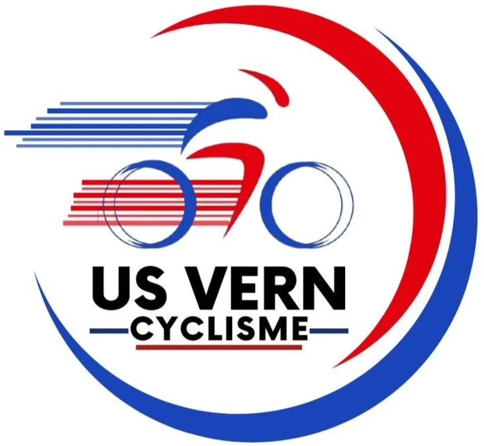
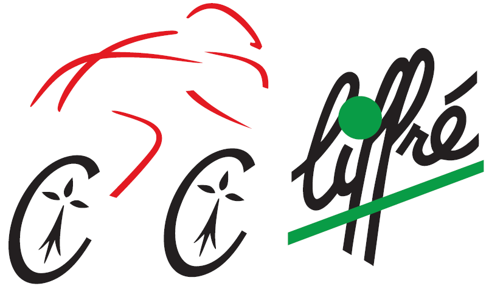
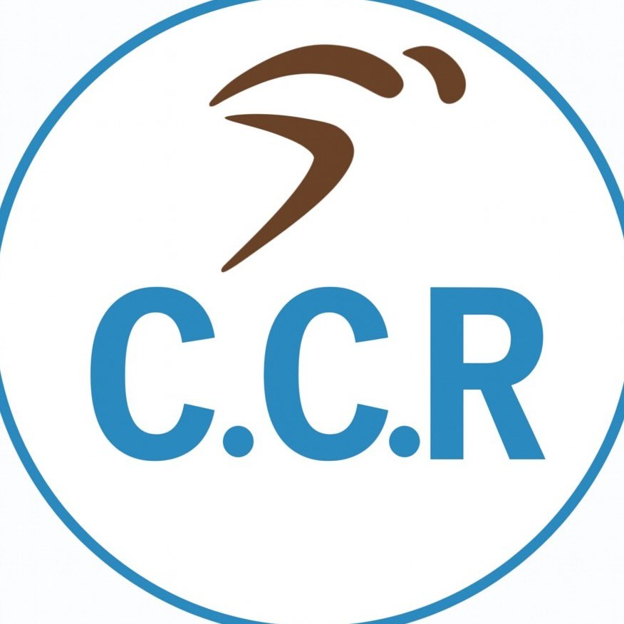
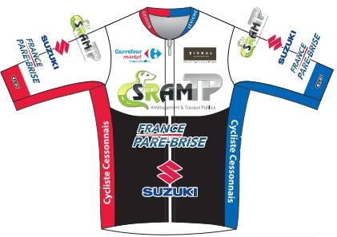

L'ECPR est le fruit d'une collaboration historique entre 7 clubs d'Ille-et-Vilaine.

Club formateur avec un fort historique dans le développement et l'accompagnement des jeunes coureurs.
Visiter le club
Une structure dynamique reconnue pour son esprit d'équipe, sa compétitivité et sa passion du vélo.
Visiter le club
Club historique de la métropole, activement engagé dans la promotion du cyclisme de compétition sous toutes ses formes.
Visiter le club
Acteur majeur du cyclisme local, alliant sportivité, convivialité et encadrement de grande qualité.
Visiter le clubUn club convivial et familial, doté d'une forte culture de la route et valorisant l'effort collectif.
Visiter le club
Section cycliste reconnue, tournée vers la performance et l'accompagnement rigoureux de ses sportifs.
Visiter le club
Une véritable pépinière de talents qui fait vibrer le cyclisme au cœur de sa commune avec passion.
Visiter le club